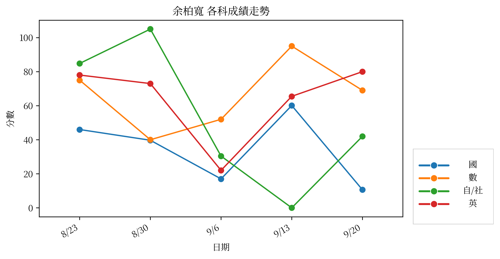

BCS：78.7（排名：25；t 總分：181.68)
| 科目 | 分數 | 班級平均 | 班級標準差 | 說明 |
|---|---|---|---|---|
| 國 | 39.7 | 59.7 | 15.0 | 此科在最新一次考試低於班平均一個標準差 (z = -1.34) |
| 數 | 40.0 | 61.2 | 20.0 | 此科在最新一次考試低於班平均一個標準差 (z = -1.06) |
| 科目 | 最近次數 | 平均 z | 說明 |
|---|---|---|---|
| 國 | 2 | -1.04 | 平均 z = -1.04 |